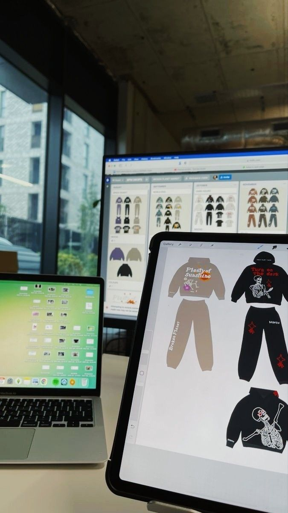

Shop
"Nagashi"
Sobre

Fundada em Guarulhos - SP, a Yangi está a oito anos no mercado streetwear, trazendo peças que refletem o cotidiano e estilo de vida do jovem brasileiro, levando a cultura hip-hop às lojas de luxo.